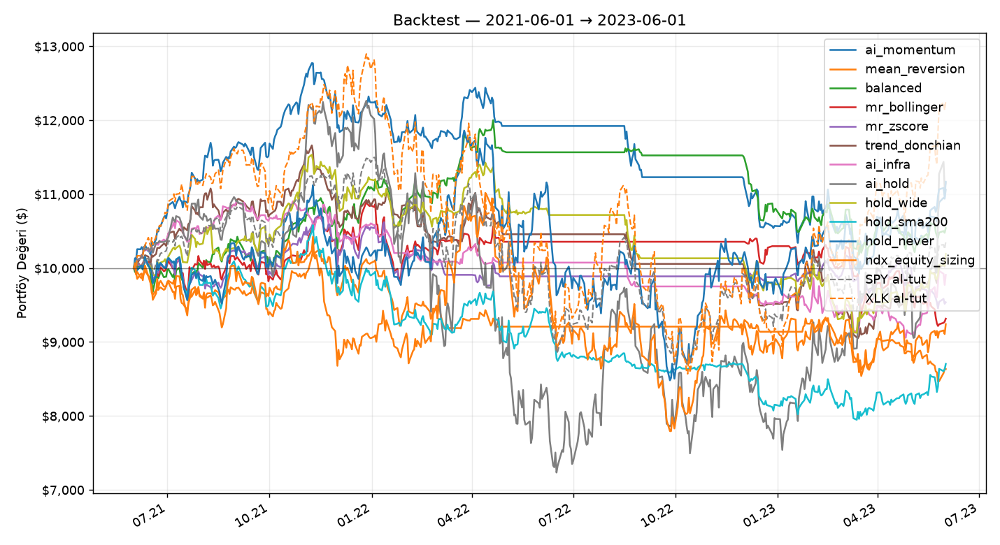

| Strateji | Getiri | CAGR | Max DD | Sharpe | Profit Factor | İşlem | Kazanma | Piyasada |
|---|---|---|---|---|---|---|---|---|
| ai_momentum | +10.6% | +5.2% | -20.8% | 0.48 | 1.01 | 204 | 32.4% | 73% |
| mean_reversion | -13.7% | -7.1% | -17.4% | -0.70 | 0.76 | 407 | 46.2% | 62% |
| balanced | +5.4% | +2.7% | -15.3% | 0.30 | 1.02 | 577 | 44.5% | 73% |
| mr_bollinger | -6.8% | -3.5% | -15.4% | -0.27 | 0.89 | 555 | 47.9% | 68% |
| mr_zscore | -4.6% | -2.3% | -11.8% | -0.19 | 0.91 | 352 | 48.3% | 63% |
| trend_donchian | +1.4% | +0.7% | -22.4% | 0.12 | 0.88 | 215 | 34.4% | 72% |
| ai_infra | -0.9% | -0.5% | -16.9% | -0.01 | 0.69 | 66 | 34.8% | 67% |
| ai_hold | +11.5% | +5.6% | -41.0% | 0.33 | — | 0 | None% | 100% |
| hold_wide | +1.9% | +1.0% | -20.9% | 0.14 | 0.7 | 144 | 27.1% | 78% |
| hold_sma200 | -13.0% | -6.7% | -24.9% | -0.47 | 0.29 | 114 | 24.6% | 100% |
| hold_never | +11.7% | +5.7% | -28.5% | 0.36 | — | 0 | None% | 100% |
| ndx_equity_sizing | -7.6% | -3.9% | -29.3% | -0.07 | — | 0 | None% | 100% |
| SPY al-tut | +3.6% | +1.8% | -24.5% | 0.19 | — | — | — | 100% |
| XLK al-tut | +22.6% | +10.7% | -33.6% | 0.51 | — | — | — | 100% |
Survivorship bias (en büyük çarpıtma): Evren bugünün endeks üyeliği. İflas eden veya endeksten çıkarılan şirketler listede yok, dolayısıyla backtest onları hiç satın almıyor. Gerçek geçmişte bu şirketler alınabilirdi.
Maliyet: işlem maliyeti uygulanmadı (0). Yüzlerce işlem yapan bir strateji, gerçek komisyon ve makas altında burada göründüğünden belirgin biçimde kötü performans gösterir.
Emir dolumu: Sinyalin oluştuğu günün kapanışından alım/satım yapılıyor. Canlı bot da kapanışa yakın çalıştığı için buna yakın, ama yine de iyimser.
Dönem seçimi: Tek bir geçmiş dönem tek bir senaryodur. Farklı yıl aralıkları farklı sıralama üretebilir; sonuçları bir tahmin değil, kuralların davranış testi olarak oku.